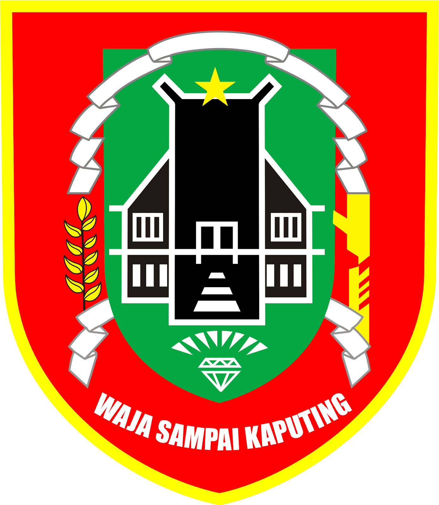

 Budaya dan Kesenian Khas Kalimantan Selatan
Beranda
Galeri
Budaya
Kesenian
Musik Daerah
Tari Tradisional
Prestasi
Search
Sejarah dan Kebudayaan Khas Suku Banjar dari Kalimantan Selatan
Sejarah dan Kebudayaan Khas Suku Banjar dari Kalimantan Selatan
Sejarah dan Kebudayaan Khas Suku Banjar dari Kalimantan Selatan
Sejarah dan Kebudayaan Khas Suku Banjar dari Kalimantan Selatan
Sejarah dan Kebudayaan Khas Suku Banjar dari Kalimantan Selatan
Sejarah dan Kebudayaan Khas Suku Banjar dari Kalimantan Selatan
Nomor
Judul
Audio
1.
Tari Baksa Kambang
2.
Tari Galuh Bajapin
3.
Tari Rudat
4.
Tari Sinoman Hadrah